-01-
意大利一个与世隔绝的村庄。
男女老少不分昼夜地劳作，但劳动成果却被伯爵夫人剥削。
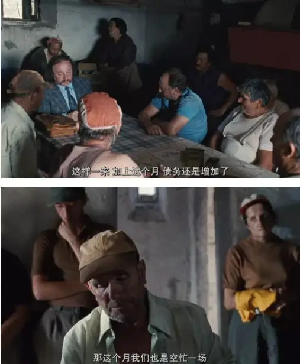

因为伯爵夫人封锁了信息，切断了村民与外界的联系，虽已是21世纪，可村子里依旧是佃农制。
村民为侯爵夫人创造了无数的财富，她住在大大的城堡里，连餐具都是贵重的银器。
而村名们往往十几个人挤在一个破旧的屋子里，除了勉强糊口的食物，什么也没有。
曾有年轻人想要离开村庄，但在侯爵夫人的威吓下，都不敢付诸实践，即使隔着的只是一条浅浅的溪水。
威权之下的恐惧无限放大了他们对于牢笼的想象，他们总觉得与外界相隔的是永难跨越的鸿沟。
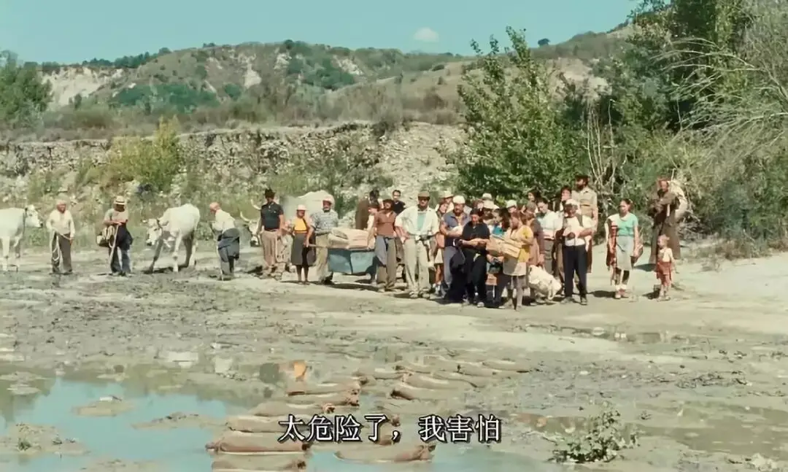
侯爵夫人也相当聪明，为了趁早打消村名出逃的想法，她对村里的孩子进行了洗脑，因为孩子们最好奇，最容易突破限制。
每个星期，侯爵夫人都会强制要求村里的小孩和她一起参加礼拜，还会邀请孩子到她家里听她讲《圣经》。
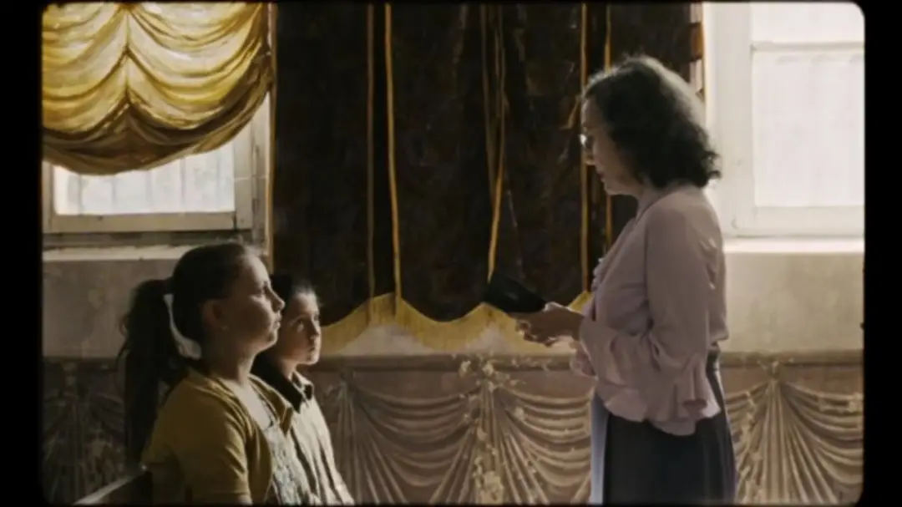
侯爵夫人每次只讲《圣经》中关于刑罚的内容以及赞扬农民的内容，不断地暗示孩子：老老实实做个农民是最好的选择，如果你不听话，将会遭遇残酷的处罚。
如此不断的洗脑，村名们虽然生活艰难、怨声载道，但却始终不敢出走，甚至都不敢正视伯爵夫人的眼睛。
伯爵夫人的儿子坦克雷迪看不惯母亲的做法，他质问母亲为什么要一直欺骗村民。
侯爵夫人告诉他：
人类就像动物，给予自由，就意味这给予他们意识到自己曾经作为奴隶的能力。
所以才要让他们沉浸在苦难之中，现在他们忍受苦难，但不知道真相，我剥削他们，而他们则剥削更弱小的这是永远不可能被停止的食物链。
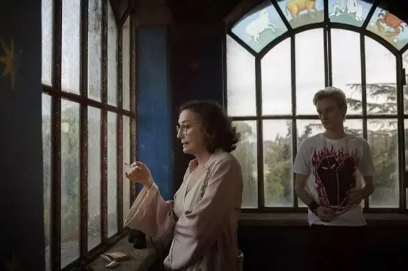
伯爵夫人看的很明白，把真相告诉大家，那就意味着自掘坟墓。
而对他们进行做大程度的榨取，虽然很残忍，但这样他们才会更加坚定不移地捍卫剥夺他们、欺骗他们的人。
当奴隶虽然很可怜，但是很安全，笼中鸟不用因为四季的变化而忧虑，也不必担心食物被抢夺，他们知道有人会定期给他们喂食。
他们用自己的自由换取了微薄的保障，不多久，他们便彻底失去了翱翔在自由天空的想法和能力。
痛并苟且着，这就是作为奴隶的全部！
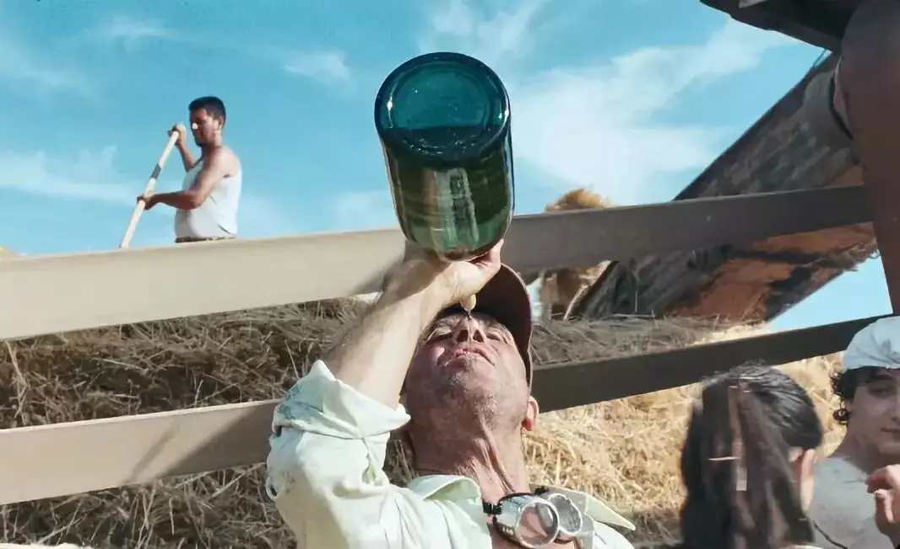
而奴隶虽然很惨，但并不意味着他们就是善类，村民们总是能够找到可以欺负的对象。
在这个村子里，拉扎罗是被所有人欺负的对象。
村里人遇到脏活、苦活、重活必定会想起他，而拉扎罗从不会拒绝大家的要求，甚至没有一句怨言。
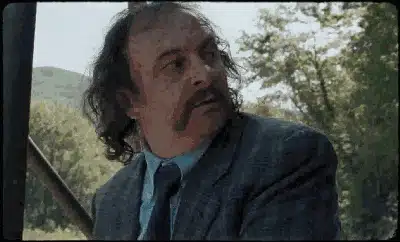
他的面庞和双眸里散发这这个世界所没有的单纯，他的笑容和动作里写满了一种别具一格的真诚。
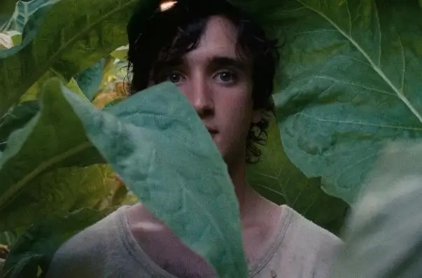
拉扎罗的身上有一种超越世俗之上的平等和包容。
轻活、重活，体面的活、肮脏的活，他都笑着做完。
面对伯爵夫人的儿子坦克雷迪，村民们看他就像奴才看皇帝一样，充满了畏惧和恐慌。
而拉扎罗看坦克雷迪和其他村民一样。
这反到引起了坦克雷迪的兴趣，没有想到这个村庄里还有可以平等交流的人，于是他们两个成为了好朋友。
坦克雷迪告诉拉扎罗，他们要联手推倒伯爵夫人的剥削和谎言......
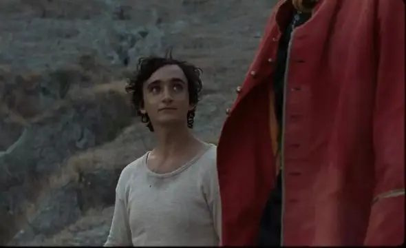
-02-
这部电影就是今年击败贾樟柯《江湖儿女》和李沧东《燃烧》夺得戛纳最佳编剧奖的意大利电影《幸福的拉扎罗》。
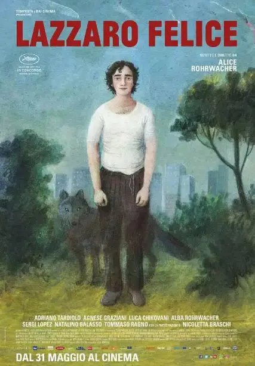
上面我介绍的内容是电影的前半部分，乍看之下，剧情有点像库斯图里卡的《地下》，似乎是一个政治寓言。
但是拉扎罗的存在总让人觉得有些“不对劲”，一时间搞不清楚这个人物的存在有什么特别意义。
而从拉扎罗被大雨淋湿发烧开始，谜一样的电影逐渐显现！
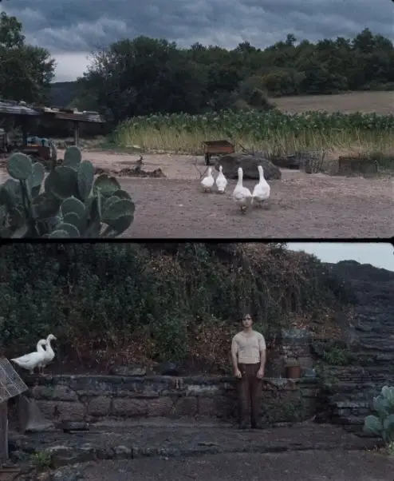
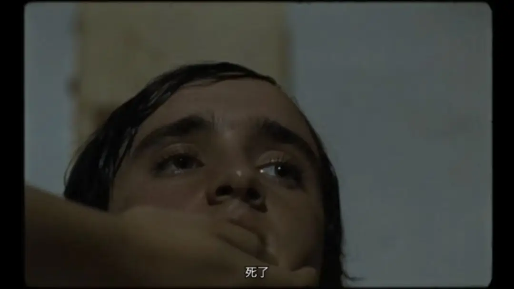
在那个晚上，发烧后的拉扎罗目光呆滞、失魂落魄，他眼睛一动不动地看着窗外。
忽然，奇怪的事情发生了。
村民注意到，天空远处除了圆圆的月亮，旁边还有什么东西闪耀着红光。
原来，与世隔绝的村子忽然出现了一座信号塔。
第二天，一直没有信号的电话终于可以打出去。
而这一个电话让警察知道了这个村子的存在，直接终止了伯爵夫人的剥削和村名的奴隶生涯。
而醒来后的拉扎罗却从高高的悬崖坠落。
接着，电影借着女孩安东尼娅的口讲了一个关于狼的寓言：
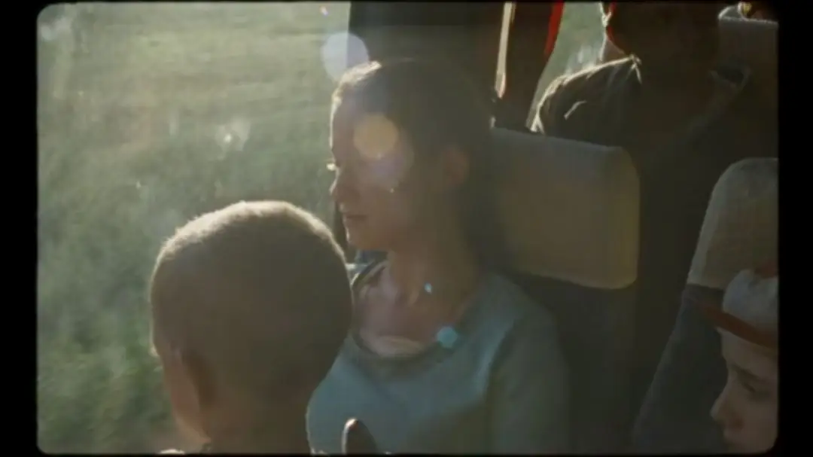
一只老狼因老态龙钟被赶出了狼群，它很饥饿，于是便跑到人类的家里，吃掉那些鸡鸭，人类试图杀死它，但又没有这个勇气，于是便日夜值班，设下许多陷阱，人类很讨厌这匹狼，觉得他凶残又强壮，但他们并不知道的是，这只是一匹衰老而虚弱的狼.....
伴随着舒缓的旁白，电影用一系列的全景航拍镜头俯拍了故事发生的所有场景。
镜头从拉扎罗坠崖开始，经过重峦叠嶂，略过充满破烂小屋的村舍，再经过伯爵夫人奢华的城堡，最后结束在一个村名仰看直升机的镜头。
原来刚才是直升机俯瞰视角下的镜头。
接着，警察出现，伯爵夫人被抓，村民获得人生自由。
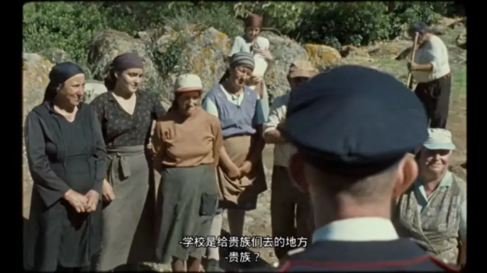
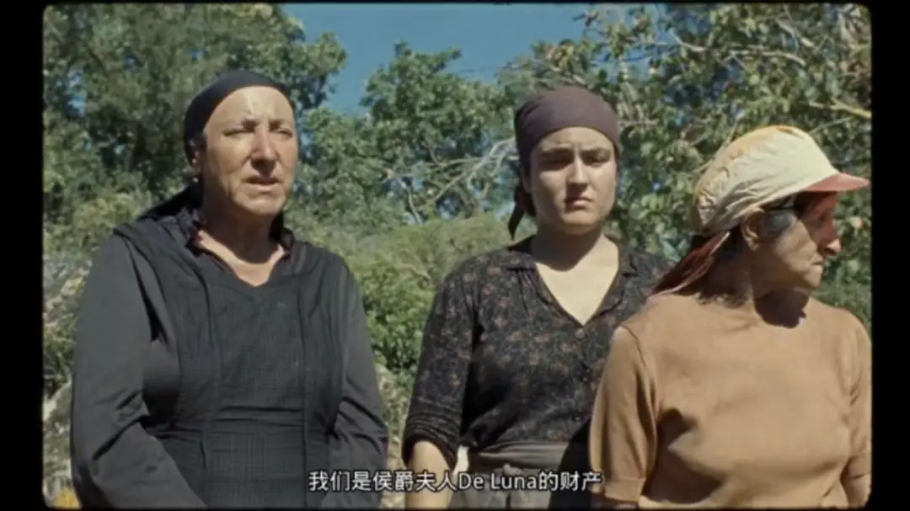
紧接着，镜头再次转化到山川之上，电影从几个大全景切换最后聚焦在一只狼的身上，接着镜头开始跟着狼运动。
讲故事的旁白再次响起：
后来，老狼的故事传到了一位圣人的耳中，他拥有与动物交流的能力，人们尊敬他，服从他，于是人们去找圣人，圣人接受了人们的请求——与狼进行和平谈判的要求。
于是他出发去寻找那一匹狼，圣人一路长途跋涉，他走啊走啊，而冬天也降临了，圣人精疲力尽，他又冷又饿，却仍然找不到狼的踪迹，他不知道的是，狼也饿了，而且他已经跟踪圣人很久了。
终于有一天，圣人倒下了，他倒在雪地上，狼也终于现身了，狼慢慢地，一边龇牙咧嘴一边向他靠近。
伴随着故事，狼走到了拉扎罗的面前，当我们还以为狼要吞吃他的身体时，旁白继续响起：
正当狼准备要吃掉他的时候，狼突然间闻到了一股气味，这一股他从未闻过的味道阻止了他，他又嗅了嗅，这是什么味道？一个好人的气味。
就像故事所讲，狼并没有吃拉扎罗。
而更加神奇的是，拉扎罗竟然醒过来了，而且是毫发无损！
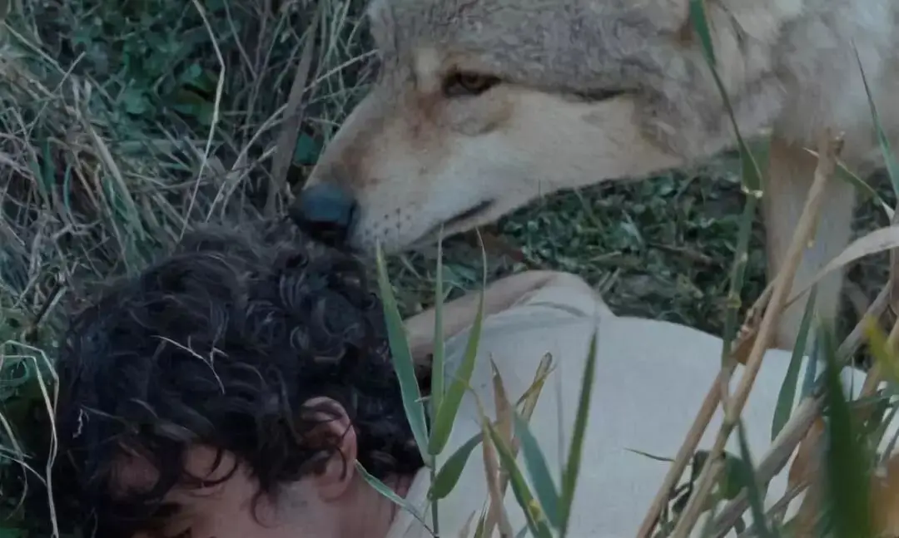
当他回到村子时却发现村子里空无一人，而伯爵夫人的豪华城堡也早已经布满了灰尘。
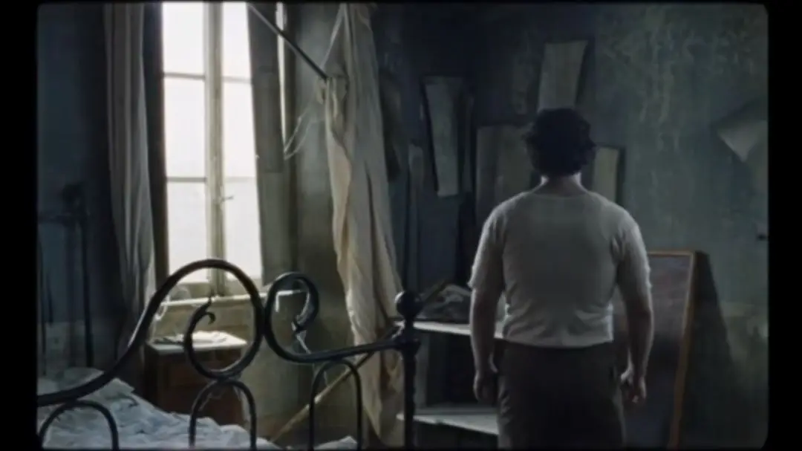
拉扎罗沿着马路一直走到城市，最终遇见了安东尼娅。
此时的安东尼娅早已不是那个十几岁的少女，而是三十岁左右的成熟妇女。
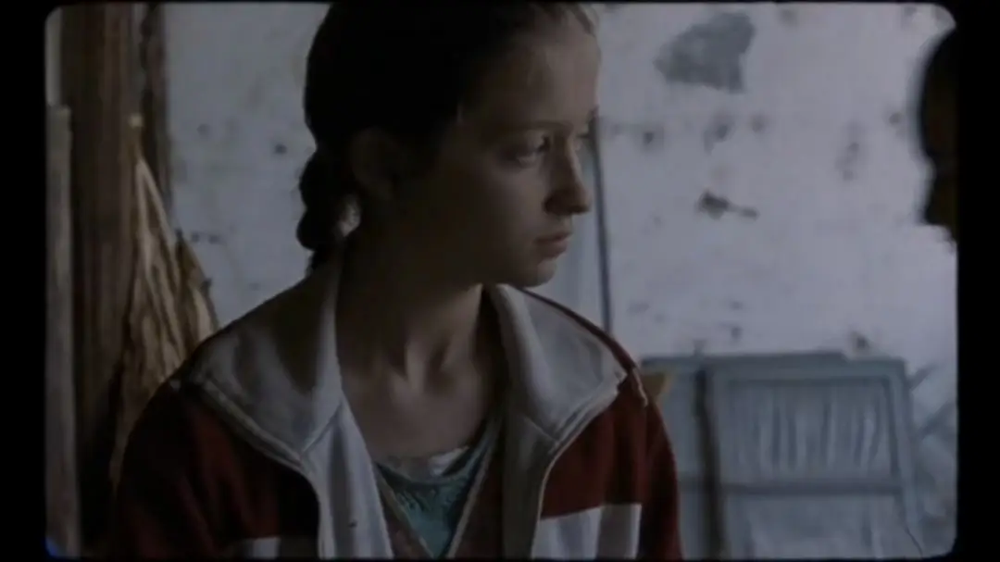
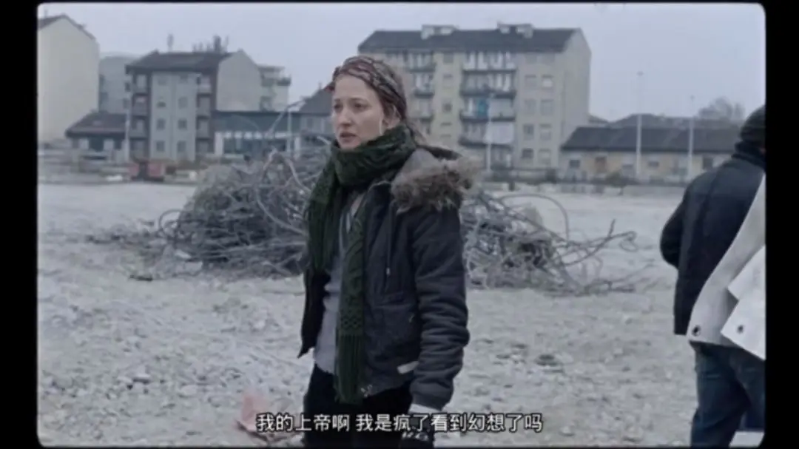
天上一天，人间万年。
拉扎罗醒来后，这个世界已经过了几十年，所有人都已经年老，而拉扎罗却依旧是那副年轻纯真的容颜。
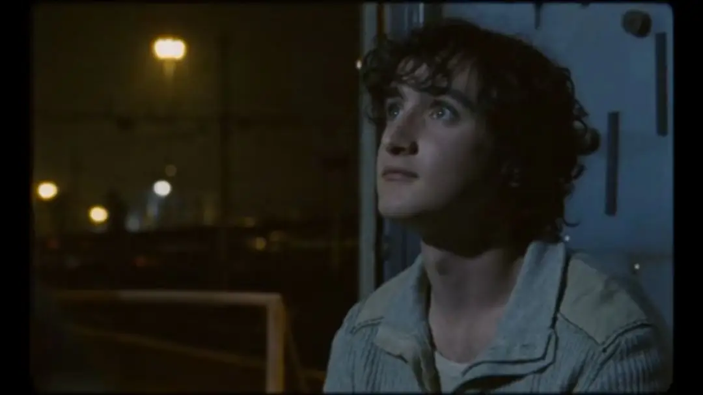
这个段落拍的很有大师风范，从拉扎罗坠亡悬崖开始，中间是寓言、村民得到自由，最后再回到复活的拉扎罗。
镜头、剪辑以及关于狼的故事，不仅非常流畅的推进了叙事，而且以寓言的深度交代和总结了村民和伯爵夫人的命运。
更加神奇的是，天空而下的大俯拍以及圣人的出现，给故事注入了神性，将政治寓言提升到了神谕的高度。
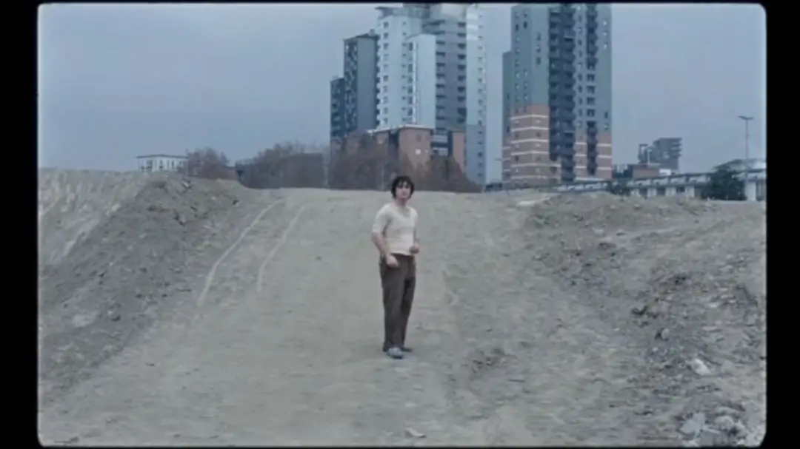
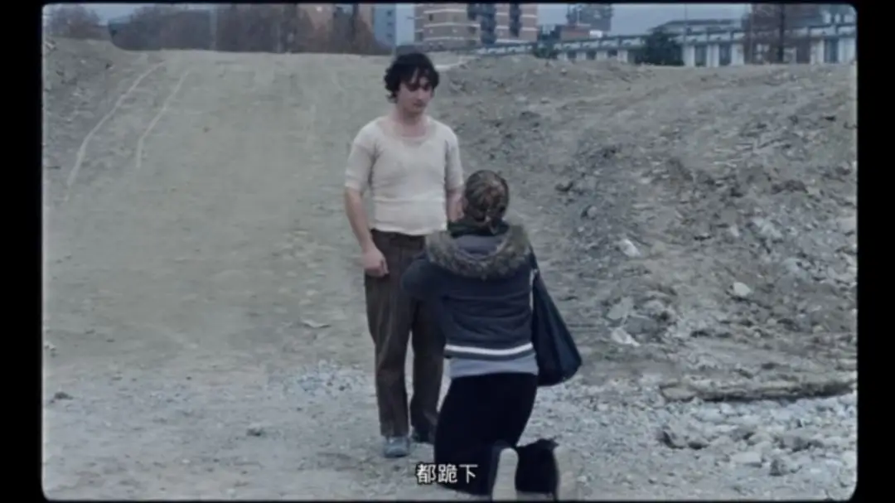
-03-
如果你了解基督教，看到后面你就会觉察到，拉扎罗其实是耶稣的翻版。
导演在剧情铺垫上不慌不忙，并没有急着交代拉扎罗的特殊身份，观众只是觉得他有些格格不入。
当你看完后再回头想一想，就会发现导演早已不着痕迹地刻画了很多指向他“身份”的细节。
拉扎罗经常在村里放着羊，这暗示着他的“好牧人”身份，耶稣曾以“好牧人”来比喻自己。
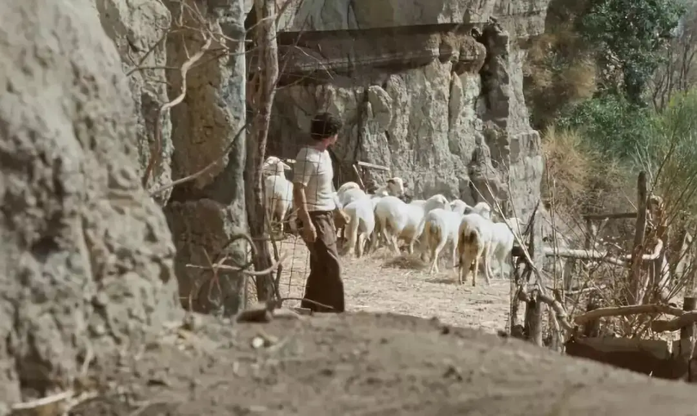
拉扎罗淋雨发烧象征他被雨水洗礼，洗礼过后，拉扎罗用神迹拯救了村民。
而狼除了是寓言叙事的功能，更代表着圣灵。
在拉扎罗受洗之前，他曾和坦克雷迪模仿狼叫，而远处出现了狼叫声的回应。
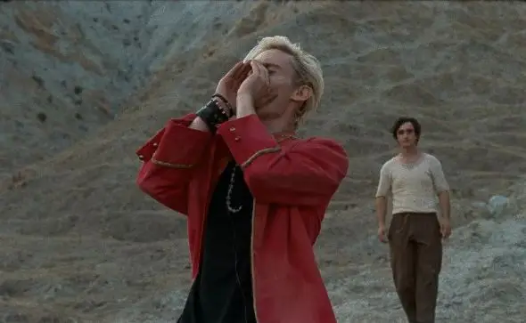
几十年后，当拉扎罗在城市中再次寻找到坦克雷迪后，他们又一次模仿了狼叫声，依旧有狼声回应。
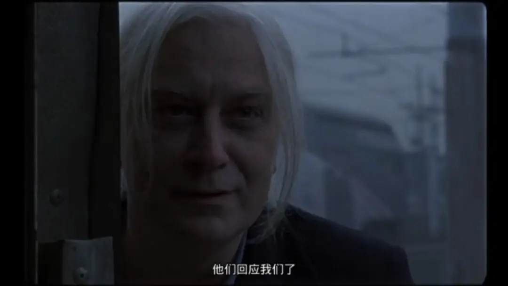
因此，在经过圣灵和水的施洗后，拉扎罗的神性开始彻底展露。
就像圣经所言“我是好牧人，好牧人为羊舍命”。
拉扎罗坠亡悬崖后，村民获得了自由，这不正是耶稣被定十字架留血舍命来救赎世人么。
“我是好牧人，我认识我的羊，我的羊也认识我”。
拉扎罗复活后，时间已经跨越几十年，他依旧没有忘记村民，他步行千里走入文明社会后，在偌大的城市里不停地寻找着三次不认主的门徒“彼得”（坦克雷迪）。
这样不离不弃的爱岂不让人动容！
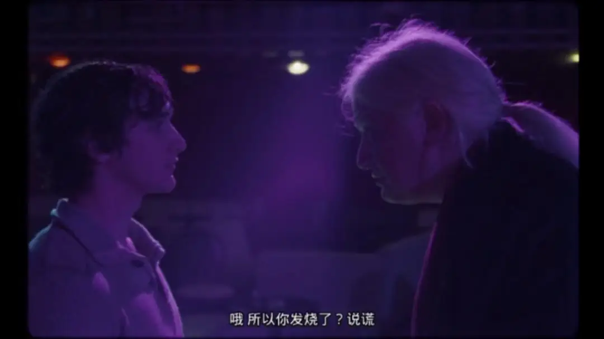
而村民不正是在埃及为奴的上帝选民么，当上帝将他们带出为奴之地后，他们就不再是奴隶了么？
他们依旧是奴隶，只不过是换了一种方式的“贫穷”。
日光之下，永无新事。
所谓的现代文明只是另一种形式的旷野，里面充满了金钱崇拜和邪情私欲。
村民们在城市中是难民一样的存在，他们挤在破旧的房子里，整天靠坑蒙拐骗才能生存。
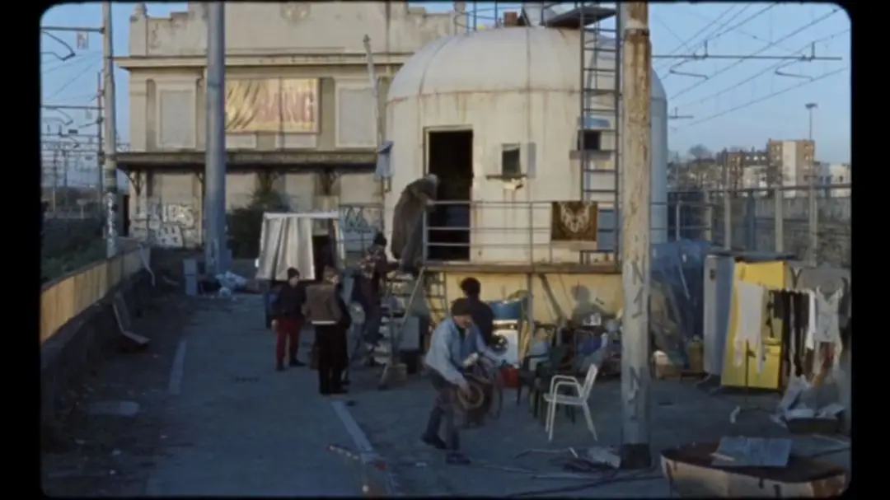
过去他们将“神”当傻子一样看，让他干活的时候才会想到他。
现在他们即使看到过神迹，却依旧拒绝他，将他当疯子一样看。
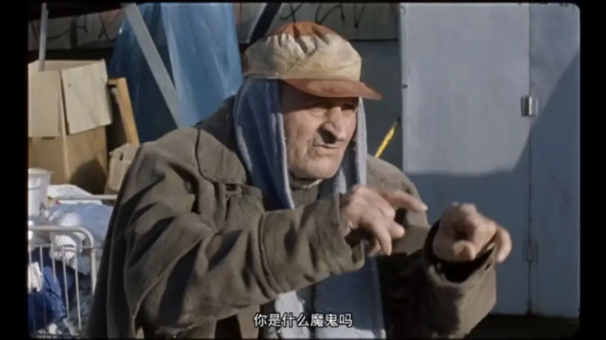
除了村民，这部电影更是深刻揭露了宗教里的虚伪和无神论。
伯爵夫人的家中，到处是圣像，可圣经和信仰却沦为她控制村民、获取个人私利的手段。
进入城市后，教堂里的冷漠更是让人痛心。
这个段落是整部电影拍的最精彩、最感人的部分。
拉扎罗和众人被旁边教堂里的圣乐吸引，于是他们进入教堂要聆听美妙的音乐。
偌大的教堂中只有零零散散几个人，而他们竟然遭到了修女的驱赶。
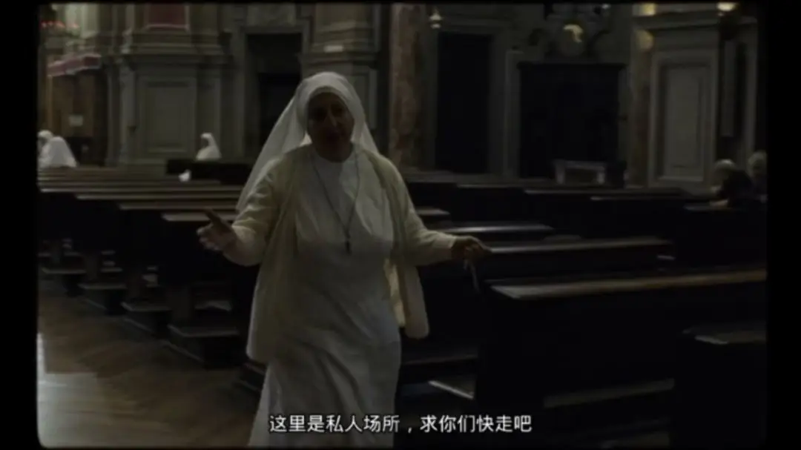
拉扎罗站在门口一动不动，紧紧盯着教堂里的钢琴，但还是被驱赶。
离开后，教堂中不可思议的事情发生了，琴师按下琴键却没有任何声音。
随后，镜头从教堂中腾空而起，镜头不断运动，离开教堂，经过街道，最后停在拉扎罗的身边。
圣乐忽然出现并盘旋在上空，跟着大家一起走。
原来音乐从教堂出走，找到了它的真正主人。
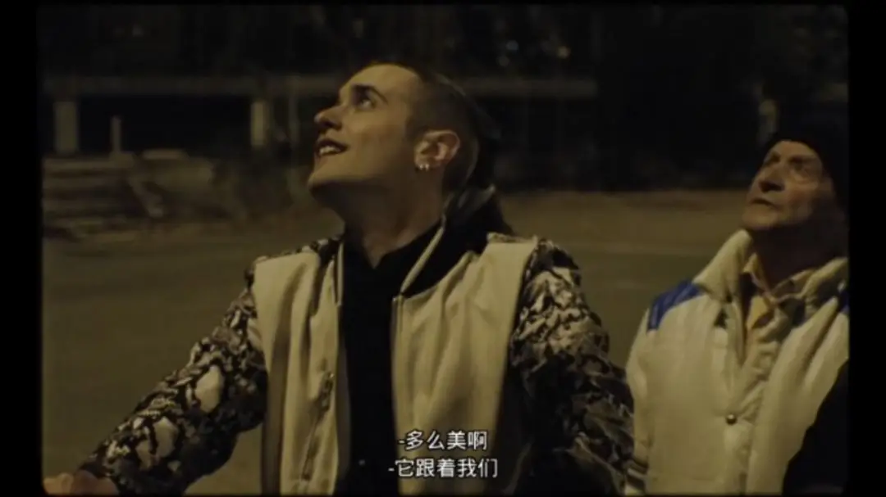
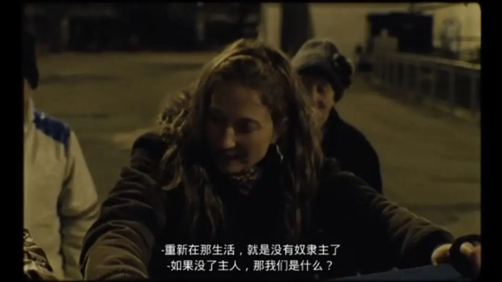
这一段拍的非常美，非常有想象力，也令人非常感动。
大家沐浴在圣乐的美好中，忽然有人提议为什么不回去村落呢，大家可以在那里重新生活。
的确，站在政治意义上，最好的制度是民主制。
但站在信仰的角度，最好的制度就是奴隶制，只不过重要的是谁做奴隶主。
如果奴隶主是骄傲，是金牛犊，是美貌和才华，我们都不会得到平安和喜乐。
如果奴隶主是真理，是上帝，奴隶就不再是一个贬义词，而是一个臣服于真理的褒义词。
-04-
这样的电影我期待已久。
近几年来，欧洲面临很多问题，难民问题、信仰衰败、同性恋合法化、伊斯兰入侵。
伴随着这些变化，戛纳、柏林、威尼斯三大电影节也在不断发生着变化，难民、伊斯兰元素越来越多，政治正确成为了电影节的潜规则。
而过去浓厚的基督教元素越来越淡薄。
21世纪的三大电影节，我再也没有见到过充满浓烈风格和宗教思想深度的罗伯特.布列松，我也没看到过孜孜不倦叩问永恒的基耶斯洛夫斯基和英格玛.伯格曼，更不要说思想深邃的塔尔科夫斯基。
因此，这部电影的出现让我激动不已。
本片导演阿莉切·罗尔瓦赫尔是最近燃气的新秀，也几乎是获奖专业户。
△罗尔瓦赫尔姐妹，左为姐姐，在本片饰演安东尼娅，右为妹妹，是本片导演
此前的《奇迹》斩获了第67届戛纳电影节主竞赛单元的评审团大奖，《圣体》为2011年意大利最新剧情佳作，戛纳电影节导演双周单元，埃松电影节评审团特别奖。
她的作品既有着自身成长经历的思考和情感，又有着对周遭社会问题的回应，同时能够将上面的元素糅合在自己的故事里，以神谕的方式表达情感、批判现实，并最终展现出一种女性导演独有的神性光辉。
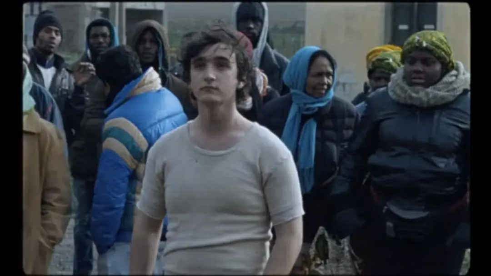
这样的作品实属难得，她的电影值得我们再三体味和思考。
尤其是信仰问题，今天的欧洲基督教自由化、世俗化非常严重，在阿莉切·罗尔瓦赫尔的作品中，宗教场所里总是充斥着事实上的无神论和令人不安的虚伪。
不论是教堂还是其他场所，人们被自己创造的文明闪瞎了眼睛，他们认为自己不再需要上帝，他们拒绝了真神，投向了偶像崇拜的怀抱。
本片的结尾也是意味深长。
当拉扎罗得知坦克雷迪因为被银行欺骗而落魄时，他带着一把弹弓只身前往银行，要拿回属于坦克雷迪的东西。
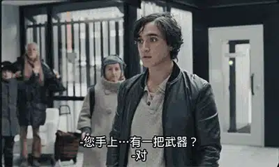
最终，拉扎罗被众人狂扁在地，而代表圣灵的狼也出现在银行中。
它跑出银行，与车流背道而驰，充满了神性的落寞和心碎。
人们用各种理论骄傲地宣告上帝已死，却不知道并不是上帝已死，而是你离上帝越来越远。
今天，欧洲不断走向“绿化”，这难道不是上帝发出的警告！
推荐阅读
▼
（点击图片即可获取全文）
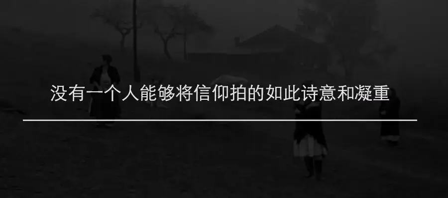
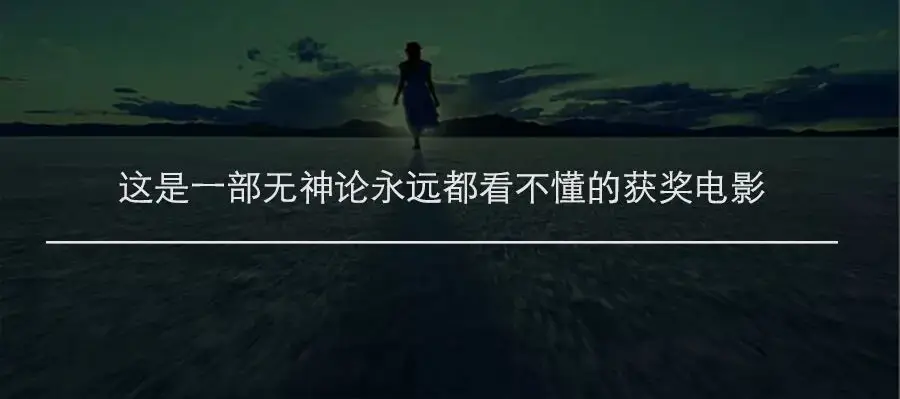
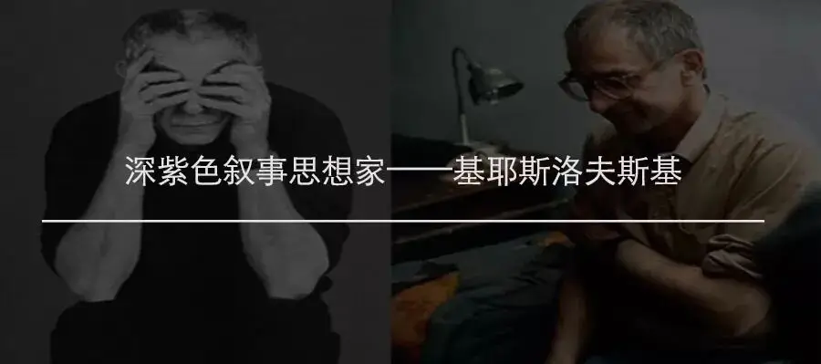
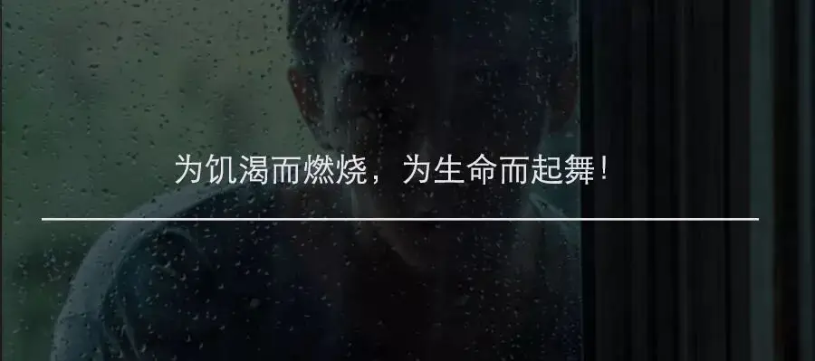

这里没有挑逗你眼目情欲的小鲜肉
也没有挑动你肉体情欲的段子
更没有膨胀你今生骄傲的鸡血
我们只在乎那些最质朴真诚的作品
在那里我们才能恢复真正的想象力
我们也坚信这才是我们真正需要的

ID:Six_hundred_hits
长按二维码，一键关注
【六百击】
-END-
电影评论
尽情分享朋友圈

苹果打赏通道
小提示：文末广告是腾讯配送广告，内容与本号无关，但您的每次点击（无需反复点）都会给平台带来几毛收益，欢迎您点击支持六百击。